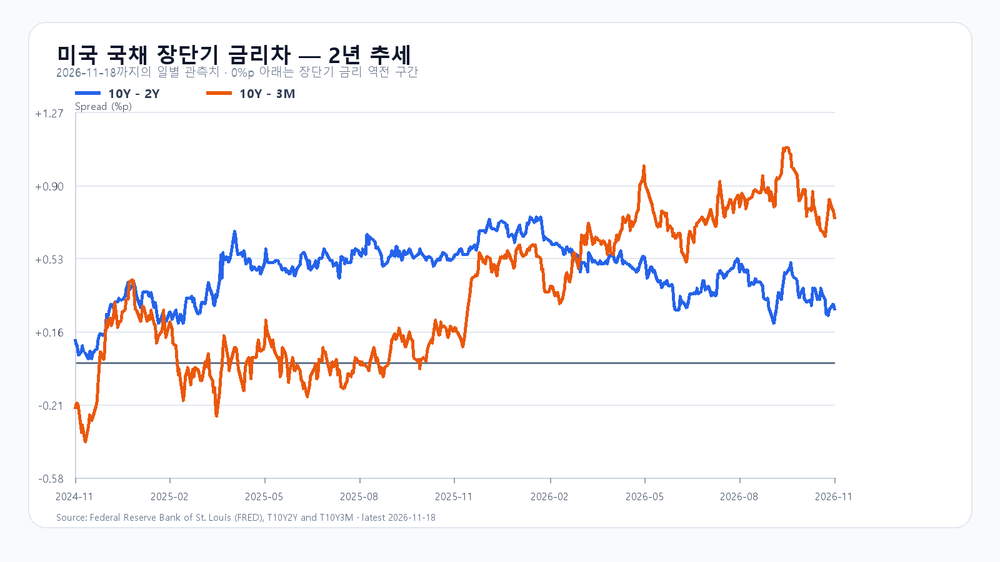
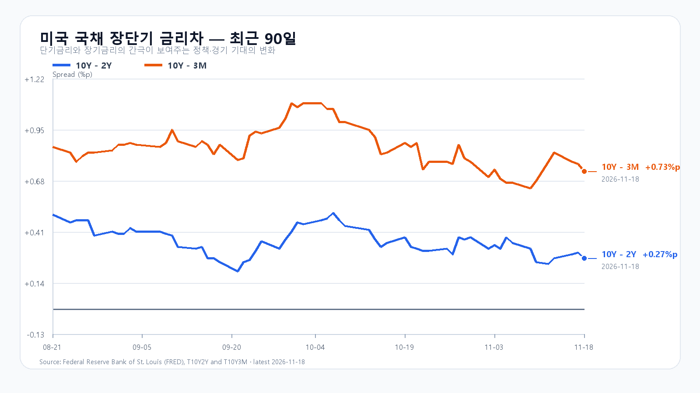

실적 발표 뒤에도 Nvidia는 하락했다
Nvidia의 실적이 좋았다는 사실만으로 반도체주 전체의 회복을 기대하기는 어려워졌습니다. 18일 미국 정규장에서 Nvidia는 150.96달러로 2.89% 하락했습니다. AMD는 5.31%, Broadcom은 3.64% 올랐고 Micron은 1.00% 내렸습니다. SOXX는 0.28% 상승, SMH는 0.12% 하락해 업종 안에서도 차이가 컸습니다. 미국 종가
Nvidia 실적은 전날 한국장 개장 전에 발표됐고 코스피는 이미 1.99% 반등했습니다. 오늘 새로 더해지는 것은 실적 발표 이후 미국 정규장에서 확인된 매도와 업종별 차별화입니다. 삼성전자·SK하이닉스가 전날 상승을 지키는지, 외국인 현물과 프로그램 비차익 매수가 함께 붙는지가 반등 지속을 가릅니다.
연준은 추가 인상 가능성을 열어 뒀다
한국시간 19일 새벽 공개된 10월 FOMC 의사록에서 거의 모든 참석자는 기본 경제전망 아래 추가 금리 인상이 적절할 가능성이 있다고 봤습니다. 당시 정책금리는 3.75~4.00%로 동결됐습니다. 의사록은 12월 금리 결정을 확정한 문서가 아닙니다. 연준 의사록
AI 설비투자는 반도체 수요를 지탱하지만 공사비와 전력·인력 수요를 늘려 물가와 조달비용을 높일 수도 있습니다. 의사록은 AI 관련 자산가치 재평가와 금융 취약성도 논의했습니다. 기업 매출 증가와 투자 자금의 회수 속도를 함께 봐야 하는 이유입니다. 금리가 높은 상태에서는 매출 전망이 좋아져도 주가의 평가배수가 낮아질 수 있습니다.
5,000 회복 뒤에도 매수의 지속이 필요하다
18일 코스피는 5,098.82에 출발해 4,943.17~5,133.14를 오간 뒤 5,067.44로 1.99% 상승 마감했습니다. KODEX 레버리지는 54,875원에 출발해 51,750~56,090원 사이에서 움직인 뒤 54,400원으로 4.26% 올랐습니다. 반등한 날에도 장중 변동폭은 컸습니다. 국내 일봉
오늘 기본 종가 범위는 4,950~5,150이며 확률은 50%입니다. 범위 안에서 외국인 현물이 순매도로 기울지 않는 경우를 가정합니다. 5,150 초과와 외국인·프로그램 동반 순매수가 겹치면 강세 5,150 초과~5,350(20%), 4,950 미만과 두 수급의 동반 순매도가 겹치면 약세 4,700~4,950 미만(30%)입니다. 경계값은 기본 범위에 배정합니다. 범위 이탈 또는 수급 반전이 각 가정을 무효화합니다. 장중 저가·고가의 예상 포락은 별도로 4,600~5,450을 둡니다.
대응 점수는 공격 15·관망 50·방어 35입니다. KODEX의 1차 지지는 전일 저가 51,750원, 반등 기준은 전일 종가 54,400원, 저항은 전일 고가 56,090원입니다. 54,400원을 회복해도 반도체와 프로그램 매수가 이어져야 반등을 신뢰할 수 있습니다. 51,750원 이탈과 동반 매도에는 하방 위험이 커집니다.
DDR5와 DDR4 가격 방향도 갈렸다
TrendForce의 18일 18:10 대만시간 현물 표에서 DDR5 16Gb 평균은 60.50달러로 0.28% 올랐고 DDR4 16Gb는 78.95달러로 0.22% 내렸습니다. 서버용 고성능 메모리 수요와 범용 제품의 가격은 같은 속도로 움직이지 않습니다. DRAM 현물
NAND 512Gb TLC 웨이퍼 현물은 9일 관측 기준 14.267달러, 11.67% 하락입니다. 같은 날 SLC 2Gb는 4.50달러로 1.01%, MLC 64Gb는 44.174달러로 0.42% 올랐습니다. 품목별 수요 차이가 크며 이 가격을 오늘의 HBM·기업용 SSD 계약가격 변화로 해석할 수는 없습니다. AI 투자 확대가 실제 출하와 이익으로 이어지는지와 주식시장의 자금 흐름은 나눠 봐야 합니다. NAND 현물
환율과 금리, 장중 수급을 함께 본다
19일 05:41:29 KST 하나은행 달러/원 고시는 1,334.00원으로 전회보다 1.50원 낮았습니다. 서울 현물환 체결가와는 다릅니다. 환율 하락은 국내 주식에 우호적인 배경이지만 미국 금리 부담을 모두 상쇄하지는 않습니다. 아래 발행 기준 표의 최신 고시와 선물 가격을 함께 살핍니다.
FRED 18일 관측에서 10년-2년 금리차는 0.27%포인트, 10년-3개월은 0.73%포인트입니다. 개별 만기는 17일 기준 10년 5.10%, 2년 4.80%, 3개월 4.33%입니다. 관측일이 다른 금리차와 개별 금리를 한 시점의 곡선으로 합치지 않아야 합니다. 10년물 절대 수준은 성장주 가치평가의 부담으로 남습니다. 10년-2년 · 10년-3개월
09:30에는 외국인 현물·선물과 프로그램의 방향, 10:30에는 반도체 저점 유지와 자동차·금융 등으로의 상승 확산, 14:00 이후에는 매수 지속을 봅니다. 시나리오 조건의 관측 시한은 15:20입니다. 연준 일정상 Jefferson 부의장 토론은 19일 09:25 ET, 한국시간 19일 23:25에 예정돼 있습니다. 다음 FOMC는 12월 8~9일입니다. 연준 일정
발행 기준 시세
| 항목 | 값 | 원천 기준 시각 |
|---|---|---|
| KOSPI 전일 종가 | 5,067.44 | 2026-11-18T15:30:00+09:00 |
| KODEX 전일 종가 | 54,400원 | 2026-11-18T15:30:00+09:00 |
| USD/KRW 하나은행 고시 | 1,334.00원 | 2026-11-19T05:41:29+09:00 |
| NQF 최근 거래 | 27,028.00 | 2026-11-19T00:42:54+09:00 |
| ESF 최근 거래 | 7,325.75 | 2026-11-19T00:42:54+09:00 |
| BZF 최근 거래 | 89.21 | 2026-11-19T00:41:10+09:00 |
| CLF 최근 거래 | 82.94 | 2026-11-19T00:42:50+09:00 |
미국 11월 18일 정규장 종가
| 종목 | 종가 USD | 등락 | 시각 ET |
|---|---|---|---|
| QQQ | 659.51 | 0.39% | 2026-11-18T16:00:00-05:00 |
| TQQQ | 52.44 | 1.22% | 2026-11-18T16:00:00-05:00 |
| SOXX | 141.85 | 0.28% | 2026-11-18T16:00:00-05:00 |
| SMH | 459.54 | -0.12% | 2026-11-18T16:00:00-05:00 |
| NVDA | 150.96 | -2.89% | 2026-11-18T16:00:00-05:00 |
| AMD | 530.14 | 5.31% | 2026-11-18T16:00:00-05:00 |
| MU | 705.27 | -1.00% | 2026-11-18T16:00:00-05:00 |
| AVGO | 354.05 | 3.64% | 2026-11-18T16:00:00-05:00 |

